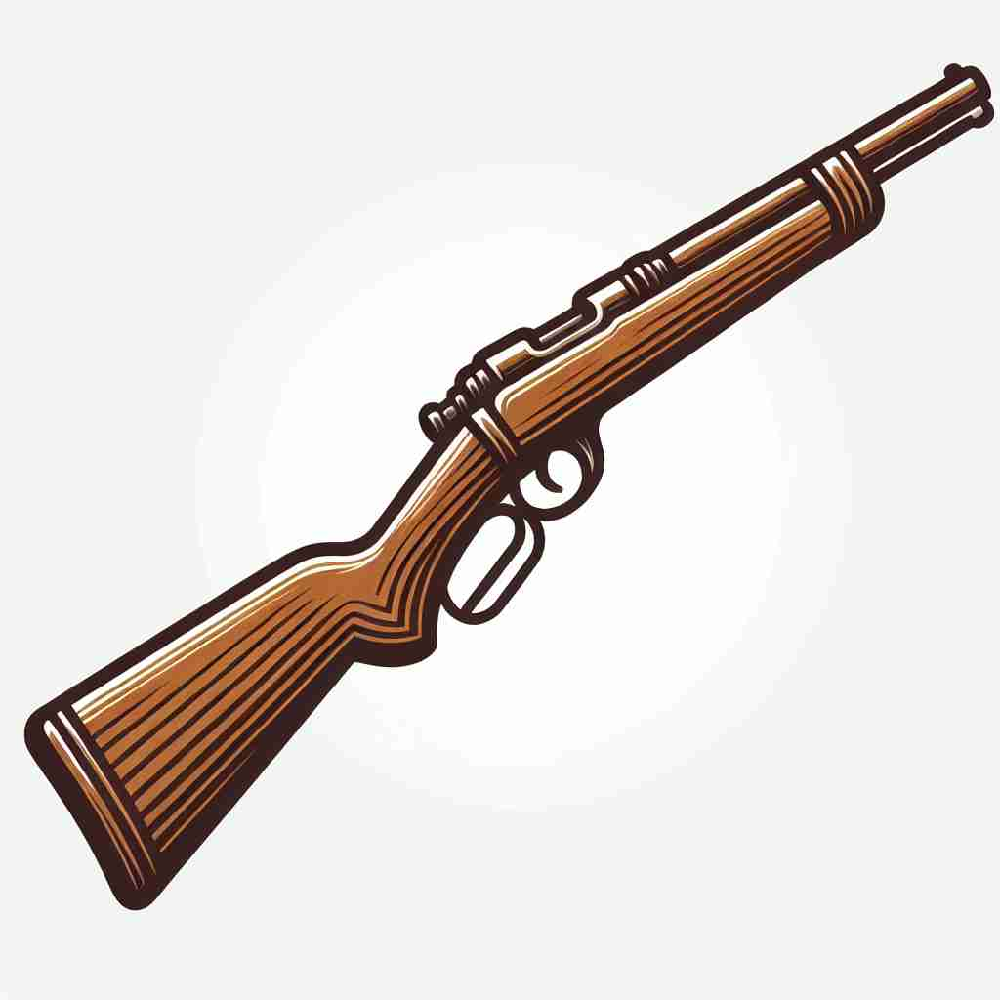

💬 He is excited to hold a rifle for the first time. 他第一次拿到步枪，感到非常兴奋。

💬 The hunter aims to shoot a rifle at the target. 猎人瞄准目标准备射击步枪。
💬 He is excited to hold a rifle for the first time. 他第一次拿到步枪，感到非常兴奋。
💬 The hunter aims to shoot a rifle at the target. 猎人瞄准目标准备射击步枪。
🧠 想象一把步枪（rifle）的特征：长管、螺旋槽、高速射击。这些特点贯穿了'rifle'的各种含义。无论是名词表示武器本身，还是动词表示快速搜寻、快速移动或制作枪管，都与步枪的特性密切相关。记住步枪的这些特点，可以帮助你更好地理解和记忆'rifle'的多重含义。
🔈 ['raɪf(ə)l]
🗝️ n. a long-barreled gun with a spirally grooved bore designed to make a bullet spin, improving its accuracy and range 具有螺旋形膛线的长管枪，其设计目的是让子弹旋转，从而提高精确度和射程。
🎭 在一个广袤的草原上，猎人正准备狩猎。他拿起一支长管步枪，准确地瞄准远处的目标。步枪的螺旋形膛线让子弹旋转，提升了射击的准确度与射程。
💬 The hunter carried a rifle to shoot game. 猎人带着一把步枪去打猎。
🌳 词根来自法语 'rifler'，意为 '刮擦'，最初用来指一种带有膛线的枪，因为膛线通过在内壁刮擦来促进精确度。
💡 可以联想到 'rifle' 的膛线是如何通过刮擦枪管内部来提高准确性，帮助记忆它与 '刮擦' 的关系。
🗝️ v. to search through something in a hurried way, often to steal 急匆匆地翻找某物，常常是为了偷窃。
🎭 在一个昏暗的房间里，一名小偷正在快速翻找抽屉，希望找到贵重物品。他的动作急促而紧张，显现出他正在rifle through东西，意图偷窃。
💬 Someone had rifled through her drawers looking for valuables. 有人翻遍了她的抽屉寻找贵重物品。
🤔 像快速瞄准射击的动作一样快速搜寻
🗝️ v. to move or throw something with force and speed 以力量和速度移动或抛出某物
🎭 在一场激烈的球赛中，球员迅速接住球并立刻rifle it across球场，球像箭一样飞向队友，交出一个完美的传球。
💬 He rifled the ball to the receiver. 他将球飞快地传给了接球手。
🤔 像子弹从步枪射出一样快速移动
🗝️ v. to provide (a gun barrel) with spiral grooves 为（枪管）提供螺旋膛线
🎭 在一家武器制造工厂中，技师正在工作台前仔细操作。他正用精密工具为步枪的枪管rifle，即刻将螺旋沟槽雕刻在枪管内，以提高射击性能。
💬 The gunsmith rifled the barrel to improve accuracy. 枪匠给枪管细纹加工以提高射击精度。
🤔 直接指制作步枪特征的动作